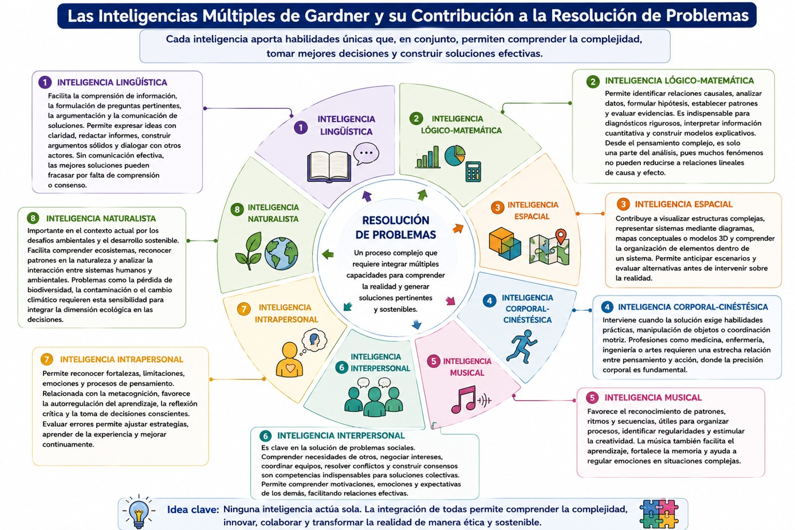

En el bloque de aprendizaje 3 revisamos la teoría de las inteligencias múltiples de Howard Gadner y ahora vamos a ver de qué modo las inteligencias múltiples se relacionan con la resolución de problemas.
Uno de los principales aportes de esta teoría consiste en demostrar que la resolución de problemas no depende exclusivamente del razonamiento lógico-matemático, sino de la capacidad para integrar diferentes formas de inteligencia según las características del problema y del contexto. Gardner define la inteligencia como la habilidad para resolver problemas o elaborar productos que poseen valor dentro de uno o más contextos culturales, enfatizando que las personas utilizan distintas capacidades cognitivas para enfrentar los desafíos de la vida cotidiana y profesional. Desde esta perspectiva, resolver un problema implica movilizar un conjunto de recursos intelectuales, emocionales y sociales, más que aplicar un procedimiento único o mecánico.
Esta concepción representa un cambio importante respecto de las visiones tradicionales de la inteligencia. Como vimos, durante muchos años predominó la idea de que las personas resolvían mejor los problemas en la medida en que obtenían un mayor coeficiente intelectual (CI). Sin embargo, Gardner demuestra que existen personas capaces de destacar en ámbitos científicos, artísticos, deportivos, sociales o empresariales aun cuando sus resultados en pruebas tradicionales no sean extraordinarios. Lo relevante no es cuánto mide una prueba de inteligencia, sino la manera en que cada persona utiliza sus capacidades para comprender situaciones, adaptarse a contextos diversos y generar soluciones pertinentes.
Desde el pensamiento complejo, esta propuesta adquiere una enorme relevancia porque los problemas contemporáneos son multidimensionales. Fenómenos como el cambio climático, la violencia, la pobreza, la deserción escolar o las crisis sanitarias no pueden comprenderse únicamente mediante cálculos o modelos estadísticos; requieren interpretar dimensiones culturales, emocionales, económicas, políticas y ambientales que interactúan simultáneamente. En consecuencia, la resolución de problemas demanda la articulación de múltiples inteligencias que permitan analizar la realidad desde diferentes perspectivas.
Cada una de las inteligencias descritas por Gardner contribuye de manera específica al proceso de resolución de problemas, revisemos de qué manera:
La inteligencia lingüística facilita la comprensión de información, la formulación de preguntas pertinentes, la argumentación y la comunicación de soluciones. Una o un profesional necesita expresar con claridad sus ideas, redactar informes, construir argumentos sólidos y dialogar con otros actores involucrados. Sin una comunicación efectiva, incluso la mejor solución técnica puede fracasar por falta de comprensión o consenso.
La inteligencia lógico-matemática permite identificar relaciones causales, analizar datos, formular hipótesis, establecer patrones y evaluar evidencias. Esta inteligencia resulta indispensable para realizar diagnósticos rigurosos, interpretar información cuantitativa y construir modelos explicativos que orienten la toma de decisiones. Sin embargo, desde el pensamiento complejo esta inteligencia constituye únicamente una parte del análisis, pues muchos fenómenos contienen dimensiones que no pueden reducirse a relaciones lineales de causa y efecto.
La inteligencia espacial contribuye a visualizar estructuras complejas, representar sistemas mediante diagramas, mapas conceptuales o modelos tridimensionales y comprender la organización de elementos dentro de un sistema. En ingeniería, arquitectura, geografía o planeación urbana esta capacidad permite anticipar escenarios y evaluar alternativas antes de intervenir sobre la realidad.
La inteligencia corporal-cinestésica interviene cuando la solución exige habilidades prácticas, manipulación de objetos o coordinación motriz. Profesiones como medicina, odontología, enfermería, ingeniería mecánica o artes requieren una estrecha relación entre pensamiento y acción, donde la precisión corporal constituye parte fundamental de la resolución del problema.
La inteligencia musical, aunque suele asociarse únicamente al ámbito artístico, favorece el reconocimiento de patrones, ritmos y secuencias, capacidades útiles para organizar procesos, identificar regularidades y estimular la creatividad. Además, la música constituye un recurso pedagógico para facilitar el aprendizaje, fortalecer la memoria y favorecer la regulación emocional durante situaciones complejas.
La inteligencia interpersonal ocupa un lugar central en la solución de problemas sociales. Ninguna problemática comunitaria puede resolverse de manera individual. Comprender las necesidades de otras personas, negociar intereses, coordinar equipos de trabajo, resolver conflictos y construir consensos son competencias indispensables para desarrollar soluciones colectivas. Gardner considera que esta inteligencia permite comprender las motivaciones, emociones y expectativas de los demás, facilitando relaciones humanas más efectivas.
La inteligencia intrapersonal permite reconocer las propias fortalezas, limitaciones, emociones y procesos de pensamiento. Esta capacidad se relaciona directamente con la metacognición, ya que favorece la autorregulación del aprendizaje, la reflexión crítica y la toma de decisiones conscientes. Un profesional capaz de evaluar sus propios errores puede modificar estrategias, aprender de la experiencia y mejorar continuamente sus intervenciones.
La inteligencia naturalista resulta especialmente importante en el contexto actual debido a los desafíos ambientales y al desarrollo sostenible. Esta inteligencia facilita comprender los ecosistemas, reconocer patrones presentes en la naturaleza y analizar la interacción entre los sistemas humanos y ambientales. Problemas como la pérdida de biodiversidad, la contaminación o el cambio climático requieren precisamente esta sensibilidad para integrar la dimensión ecológica dentro de la toma de decisiones.
La resolución de problemas desde las inteligencias múltiples no implica que utilices todas las inteligencias con la misma intensidad en cada situación, sino reconocer cuáles deben fortalecerse según las características del problema. Una o un abogado probablemente recurrirá con mayor frecuencia a la inteligencia lingüística e interpersonal; una o un ingeniero combinará la lógico-matemática con la espacial; una o un docente integrará las inteligencias lingüística, interpersonal e intrapersonal; mientras que una o un profesional de la salud necesitará articular capacidades lógico-científicas, interpersonales y corporales durante la atención clínica. No obstante, en todos los casos el desempeño profesional mejora cuando las distintas inteligencias interactúan de manera complementaria.
Esta integración adquiere una importancia especial en tu educación universitaria pues el aprendizaje ya no puede orientarse únicamente a transmitir contenidos disciplinares, sino que debe promover experiencias en las que desarrolles diversas capacidades para enfrentar situaciones reales. En este sentido, la resolución de problemas constituye un proceso interdisciplinario y colaborativo. Frente a una problemática como el abandono escolar, por ejemplo, la inteligencia lógico-matemática permitirá analizar indicadores estadísticos; la lingüística facilitará construir argumentos y comunicar hallazgos; la interpersonal favorecerá el diálogo con estudiantes, familias y docentes; la intrapersonal ayudará al investigador a reconocer sus propios prejuicios; la espacial permitirá representar las relaciones entre variables mediante mapas conceptuales; y la naturalista contribuirá cuando existan factores territoriales o ambientales asociados al fenómeno. La solución emerge precisamente de la interacción entre todas estas capacidades y no de una única forma de razonamiento.
Desde la perspectiva del pensamiento complejo, las inteligencias múltiples constituyen un sistema dinámico cuyas capacidades se complementan continuamente. Ninguna inteligencia actúa de manera aislada; todas interactúan para comprender la realidad, interpretar la incertidumbre, integrar múltiples perspectivas y construir respuestas adaptativas ante problemas complejos. En consecuencia, lograr que seas una o un profesionista capaz de resolver problemas significa no sólo que desarrolles conocimientos técnicos, sino también la diversidad de inteligencias que hacen posible comprender la complejidad del mundo y actuar de manera ética, crítica, colaborativa y creativa frente a los desafíos del siglo XXI. Observa el siguiente diagrama:

- Gardner, Howard (2001). Estructura de la mente. Teoría de las Inteligencias Múltiples. Colombia: FCE